Field Construction
Glossary
Guía de referencia para personal de campo, operaciones e ingeniería. Enfocada en el proceso de construcción de red FTTH: métodos, materiales, equipos y documentación. Los términos aparecen en inglés (idioma de trabajo) con su equivalente en español.
Excavación abierta en el suelo para colocar conductos o cables. Se abre la zanja, se instalan los conductos y se tapan y reparan la superficie (asfalto, banqueta, tierra). Es el método más tradicional y directo cuando el terreno lo permite.

La bóveda de menor tamaño. Se entierra al ras del suelo y da acceso a cables de fibra en zonas residenciales. Su apodo "flowerpot" viene de su forma cilíndrica similar a una maceta. Ideal para puntos simples con pocos cables.

Bóveda rectangular enterrada con tapa al ras del suelo. Permite acceder a los cables sin necesidad de excavar. Los tamaños más comunes son HH 17, HH 24 y HH 30 (pulgadas), pero existen muchos otros tamaños según el fabricante y la aplicación. A mayor tamaño, más cables y equipos puede alojar.
Nota: los tamaños HH 17, 24 y 30 son los más frecuentes en campo, pero no son los únicos disponibles.
.png)
Fiber Distribution Hub: el nodo donde el cable de distribución se divide para llegar a los hogares mediante splitters. Puede instalarse en poste, en gabinete o en bóveda. Los modelos 288, 432, 576 y 864 indican la capacidad máxima en fibras.
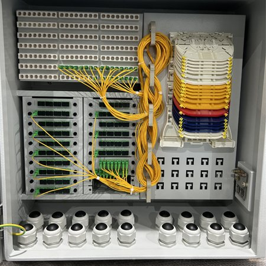
Caja metálica o plástica que protege equipos activos o pasivos de red (splitters, empalmes, patch panels) instalada en la vía pública, en postes o en losas. Puede ser un enclosure (caja cerrada con acceso por puerta) o un cabinet (versión más grande, generalmente con temperatura controlada). Son puntos clave de la red de distribución.

Perforación horizontal dirigida (HDD — Horizontal Directional Drilling) que instala el conducto sin abrir la superficie. Se guía la broca bajo tierra en la dirección correcta. Se usa para cruzar calles, carreteras, vías de tren o cualquier zona donde no se puede excavar. Un bore existente puede reutilizarse para jalar nuevos cables.

Indica que la perforación no existe y debe realizarse desde cero. A diferencia de utilizar un conducto existente, el new bore implica costos adicionales de maquinaria, tiempo y gestión de permisos. Se especifica claramente en los planos de construcción para distinguirlo de los tramos donde ya se cuenta con infraestructura de canalización aprovechable.

Técnica de perforación de corta distancia donde se dispara un "misil" o torpedo neumático que abre paso en el suelo sin guía direccional. Es más rápido y económico que el HDD pero solo funciona en tramos cortos y terrenos blandos. No se controla su dirección con la misma precisión.

Método en el que una máquina abre una ranura estrella en el suelo e instala el cable o conducto en un solo paso, sin zanja abierta. Es muy eficiente en terrenos blandos como jardines, campos o bermas. No requiere reponer asfalto. Se usa frecuentemente para instalar drops en zonas residenciales.

Tubo por donde viaja el cable de fibra óptica bajo tierra. El HDPE (High Density Polyethylene) es el material estándar en telecom: es flexible, resistente a golpes, químicos y humedad. El cable se jala a través del conducto una vez instalado. Protege el cable de aplastamiento y permite reemplazarlo sin excavar de nuevo.

Medida de longitud en pies que indica cuántos pies de zanja o bore se instalan. Es la unidad estándar en proyectos de construcción en EUA y se aplica a cualquier tipo de proyecto, no solo telecomunicaciones. Ejemplo: 450 ft of bore = 450 pies de perforación. Se usa para estimar materiales, costos y tiempo de trabajo.
⚠ El footage aplica a los métodos de construcción (trench, bore, plow), no al cable en sí. El cable tiene su propio metraje.
Cámara subterránea con tapa al nivel del suelo (en banqueta o calle) que permite a técnicos bajar y acceder a los cables para empalmes, jaloneos y mantenimiento. Son más grandes que los handholes: el técnico puede entrar físicamente. Pueden alojar múltiples cables y equipos de empalme.
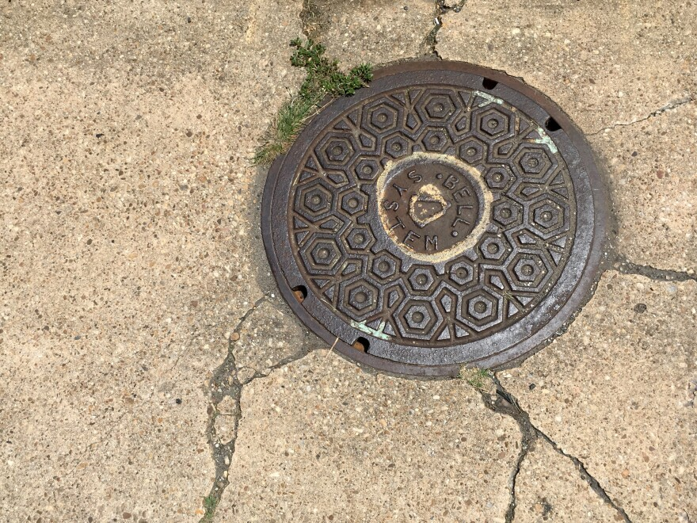
Caja pequeña que emerge sobre la superficie del suelo (generalmente en jardines o bermas) y que aloja terminales de fibra, splitters o puntos de empalme. A diferencia del handhole, no está enterrado al ras sino que tiene una parte visible. Es un punto de distribución común en redes residenciales enterradas (buried).
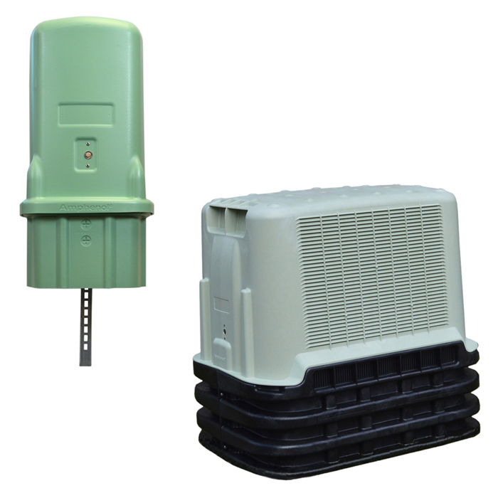
Delimitación entre la propiedad privada y el espacio público (calles, avenidas, ROW de ferrocarril). Sirve como referencia de dónde puede ir la infraestructura sin invadir propiedad privada. Esta información es extraída de Property Appraiser, Plat Books y récords de las ciudades.
Línea axial que divide una vialidad en dos mitades simétricas. La información para determinar este eje es extraída de Property Appraiser, Plat Books y récords de las ciudades. Otras herramientas como el GIS son clave para determinar su ubicación técnica.
⚠ El Center Line no siempre equidista de los bordes actuales de la vía. Las ciudades suelen añadir carriles de forma asíncrona, por lo que el CL original se mantiene inalterado como referencia legal y catastral aunque la calzada haya perdido su simetría. Es imperativo consultar los registros históricos para su ubicación exacta.
Límite físico donde termina la superficie pavimentada de una vialidad y comienza la berma, acotamiento o terreno natural.
Línea que divide parcelas o propiedades privadas contiguas. Se traza usando el GIS del condado o registros catastrales.
Documentos oficiales de registro de la propiedad que contienen los planos de subdivisión, lotes, servidumbres y linderos legales de un área. Son la fuente primaria para trazar easements, ROW y property lines.
Derecho legal registrado sobre un predio ajeno para un uso específico (paso de infraestructura, acceso, mantenimiento). Se dibuja como una franja dentro del predio privado afectada por este derecho.
Sistema de referencia de la división territorial pública de tierras en EUA (Public Land Survey System). Se usa para referenciar ubicaciones en áreas rurales donde las direcciones de calle no existen.
NAVD88 (North American Vertical Datum 1988) y NGVD29 (National Geodetic Vertical Datum 1929) son los sistemas de referencia verticales estándar para elevaciones en EUA. Se usan para estandarizar elevaciones en zonas con riesgo de inundación.
Principal empresa distribuidora de electricidad en Florida. La infraestructura de FPL (postes, líneas, subestaciones) debe identificarse en el mapa base para coordinar instalaciones de telecom.
Agencia estatal responsable de las vialidades y el ROW de carreteras en Florida, así como del mantenimiento de las mismas. Cualquier trabajo en el ROW de FDOT requiere permisos específicos y el cumplimiento de sus estándares de diseño y MOT.
Agencia del condado de Miami-Dade responsable de la protección de recursos naturales (humedales, cuerpos de agua, zonas de inundación). Se consulta para identificar restricciones ambientales que afecten el trazado. Cualquier trabajo bajo la jurisdicción de DERM requiere permisos específicos y el cumplimiento de sus estándares.
Formato de archivo comprimido de Google Earth (Keyhole Markup Language Zipped) que contiene capas geográficas vectoriales, imágenes y datos de ubicación. Se usan para importar capas de referencia al software de diseño.
Herramienta de imágenes a nivel de calle (Google Street View u otras plataformas) usada para verificar condiciones reales del sitio sin visita presencial. Es complementaria al vuelo aéreo y al fieldwork, no un sustituto.

El área geográfica visible y activa en el software de diseño donde se trabaja en ese momento. Define los límites del diseño a desarrollar. Cada viewport puede corresponder a una lámina o sección del proyecto.
Paquete de información inicial proporcionado por el cliente al inicio del proyecto, que puede incluir fotografías del sitio, información técnica, planos preliminares y requerimientos específicos. Revisarlo es el primer paso antes de iniciar cualquier diseño.
Entidad gubernamental (municipio, condado, estado, agencia federal) con autoridad legal sobre el área de trabajo. Define qué estándares de diseño aplican, qué permisos se requieren y cuál es el proceso de aprobación.
Proceso técnico, logístico y constructivo para preparar una estructura existente (postes y su infraestructura) para la instalación, reubicación o refuerzo de nuevas líneas de distribución. Solo se realiza para postes.
Archivo base del proyecto que contiene la estructura, capas, estilos y estándares específicos de diseño para el desarrollo de ingeniería, una jurisdicción o un tipo de permiso determinado. Confirmar el template correcto antes de empezar es obligatorio.
Documento con los requerimientos específicos de cada zona y fase del proyecto. Es obligatorio revisarlo y verificar que todos los requerimientos estén cumplidos antes de enviar la asignación.
Acceso vehicular privado que conecta una propiedad privada con la vía pública. Se identifica para evitar instalar postes o conduits que bloqueen accesos existentes, y para planificar la instalación de drops que crucen la entrada.
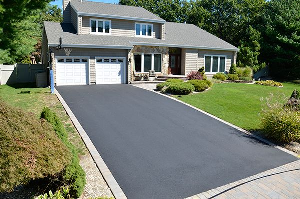
Estructura de delimitación física (metal, madera, malla) entre propiedades o áreas. Se registra para identificar posibles obstáculos para la instalación de postes, conduits o drops, y para definir puntos de acceso al predio.

Zona peatonal pavimentada paralela a la vialidad, generalmente dentro del ROW. Determina el tipo de instalación (trench con reposición de concreto vs. bore o plow bajo la banqueta) y los permisos necesarios.
Perfil metálico o plástico en forma de 'U' usado para proteger cables que deben pasar sobre una superficie expuesta o a lo largo de una fachada. Se identifica cuando hay infraestructura existente con este tipo de protección.
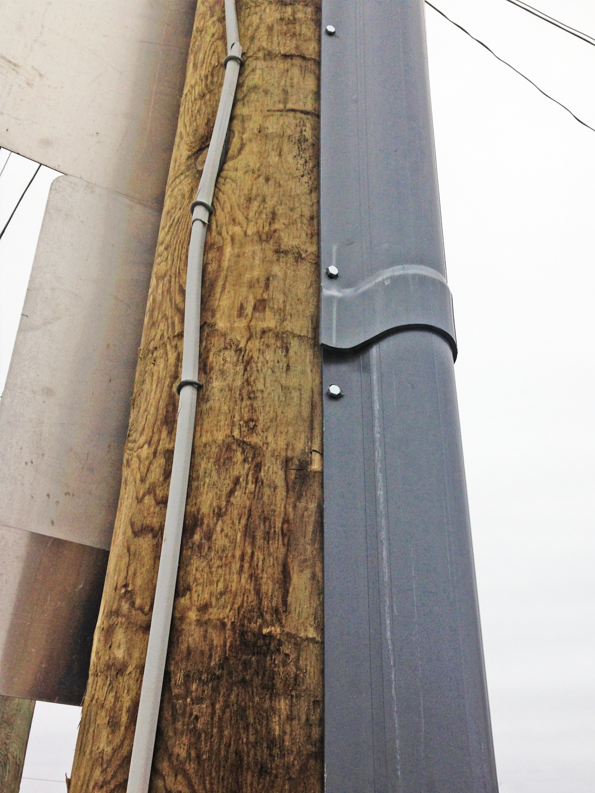
Camino que toman los cables para subir desde el suelo (o un sótano) hacia los pisos superiores de un edificio o hacia la cima de un poste. Comúnmente se ubican dentro de edificios (ductos verticales) o pegado al costado de un poste de utilidad. Estos proporcionan una vía despejada para el cableado.
Infraestructura ferroviaria activa o fuera de servicio presente en el área de diseño. Se identifica para planificar cruces (railroad crossing) con los permisos correspondientes y el uso obligatorio de HDD.
Se refiere al método constructivo Aéreo (Aerial / Overhead). Instalación de cables sobre postes, a diferencia del método subterráneo (UG). Ver también: UG — Underground.
Línea que representa el máximo nivel normal alcanzado por un cuerpo de agua, determinada por evidencias físicas (erosión, cambio de vegetación, depósitos de sedimentos). Es el límite legal para regulaciones ambientales y de construcción en zonas ribereñas.
Elevación que el nivel del agua alcanzaría en una inundación con 1% de probabilidad anual (inundación de 100 años), según los mapas de la FEMA. Referencia obligatoria para el diseño de infraestructura en zonas de riesgo.
Zonas de terreno saturadas estacionalmente que albergan vegetación y fauna específica de ambientes húmedos. Están protegidas por ley federal y estatal. Se identifican para evitar afectarlas o para obtener permisos ambientales.
Franja de terreno de protección alrededor de un cuerpo de agua, humedal u otro elemento sensible. Generalmente de 150' a 200' desde el borde del canal. No se puede instalar infraestructura permanente dentro del buffer sin permisos ambientales especiales.
Elevación del punto más alto del borde o talud de un canal de agua. Representa el límite físico superior antes de que el agua desborde hacia las zonas adyacentes. Es la referencia de medición para cruces de canal.
Estructura hidráulica cerrada (tubo, caja o arco) instalada bajo una vía, terraplén o camino para permitir el paso del flujo de agua. Se identifican para planificar la instalación de conduits de telecomunicaciones o cualquier otra utilidad propuesta en la misma ubicación.
Tecnología de perforación subterránea que permite instalar conduits sin abrir zanjas en superficie. Se usa para cruces de vialidades, ríos, vías de tren u otras obstrucciones. Es la base técnica del Bore / Directional Bore.
Excavación puntual que sirve como punto de inserción o recepción para la maquinaria de HDD. El BP de entrada es donde se posiciona el equipo perforador; el de salida es donde emerge la cabeza de perforación.
Ducto interior instalado dentro de un conduit principal para proteger y organizar cables de fibra o coaxiales. Permite separar diferentes servicios o carriers dentro de un mismo conduit.
Método constructivo subterráneo. La infraestructura se instala bajo la superficie del terreno mediante zanjas (trench), bore (HDD) o arado (plow). Ver también: AE / OH.
Tecnología de red de fibra óptica que lleva la conexión directamente hasta el domicilio del usuario final. Es el tipo de red para la que se diseña toda la infraestructura documentada en este glosario.
Cable principal que transporta la señal desde el OLT hasta los nodos de distribución (FDH). Es el cable de mayor capacidad (troncal) de la red. También llamado backbone o feeder.
Cable secundario, dirigido a los terminales. Conecta los FDH con las terminales (OTE, MST o FDT) en los postes o pedestales.
Cable terciario, dirigido al usuario final. Es el tramo más delgado de la red: conecta la terminal con el domicilio del cliente. Ver también: Drop Cable en sección WIRELESS.
Terminal de red óptica instalada en el domicilio del cliente. Convierte la señal óptica en señal eléctrica para los dispositivos del usuario. Es el punto final de la red FTTH en el lado del cliente.
Edificio de viviendas o unidades residenciales múltiples (apartamentos, condominios). Requiere diseño especial de distribución interna de fibra, con risers y puntos de distribución por piso o bloque.
Small Business Unit. Unidad de pequeña empresa. Segmento de clientes empresariales de menor escala dentro de una red FTTH.
Single Family Unit. Vivienda unifamiliar. El cliente residencial estándar de la red FTTH. Recibe su conexión directamente desde la terminal mediante un drop de 2–4ct.
Plano o elemento gráfico que incluye cotas (dimensiones numéricas) que indican distancias, separaciones o tamaños de los elementos representados. Un diseño acotado especifica las distancias necesarias para construcción y permisos.
Fibras adicionales conectadas pero no activas, reservadas para uso futuro o expansión de la red. Se designan en el diseño para garantizar capacidad de crecimiento sin necesidad de tender nuevos cables.
Inventario exhaustivo de todos los materiales, equipos y componentes requeridos para ejecutar el diseño: tipos, cantidades, especificaciones y unidades. Es la base para la requisición de compra y el control de inventario.
"ct" significa count (conteo). Indica cuántas fibras ópticas individuales contiene el cable. A más fibras, más conexiones puede soportar simultáneamente. Ejemplo: un cable 48ct tiene 48 fibras individuales dentro de su cubierta protectora.

Los cables de menor conteo, usados principalmente para conexiones de un solo cliente o puntos finales muy específicos. El cable drop que llega a la casa del cliente suele ser de 2ct o 4ct. También se usan en jumpers y pigtails dentro de equipos.
Cables de distribución para ramas secundarias del vecindario. Conectan los FDH con las terminales (OTE) en los postes o con grupos de pedestales. Son más delgados y económicos que los cables de troncal.
Cables de alta capacidad usados en el tramo principal (feeder o backbone) que conecta el OLT o hub central con los FDH de cada zona. Existen cables de mayor capacidad como 864ct, 1152ct o más para rutas de muy alta densidad.
Cable de fibra que va desde la terminal (OTE, MST o FDT) hasta el domicilio del cliente. La terminal puede estar en un poste, en un handhole o en un pedestal. Es el tramo final de la red: el más delgado, con menor conteo (2–4ct), y puede instalarse aéreo (desde el poste) o enterrado (buried drop).

Caja donde se conectan los cables drop de los clientes. Se instala principalmente en postes. El número de puertos indica cuántos clientes puede servir: OTE 4-port, OTE 6-port, OTE 8-port, OTE 12-port. Pueden existir variantes de mayor capacidad según el fabricante.
Ver también: MST y FDT, que son tipos alternativos de terminal con diferente diseño y capacidad.


Tipo de terminal de fibra óptica diseñada para servir a múltiples clientes desde un solo punto. Destaca por integrar un tail (latiguillo de entrada) de diferentes longitudes, lo que permite mayor flexibilidad según la distancia al punto de empalme. Puede montarse en poste, pared o pedestal.

Terminal de fibra instalada típicamente en pedestal o handhole, que sirve como punto final de distribución en zonas de red enterrada (buried). Desde aquí salen los drops enterrados hacia las casas.

Caja sellada que protege los empalmes de fibra por fusión (fusion splices). Protege las fibras del polvo, agua y daño mecánico. Viene en tres tamaños según la cantidad de cables y fibras a empalmar:


El splice case más pequeño. Para empalmes sencillos con cables de bajo conteo. Común en ramas residenciales secundarias.
Tamaño mediano. Para nodos intermedios con mayor densidad de cables y empalmes.
La más grande. Para nodos principales donde convergen cables de alto conteo (144ct o más).
El equipo activo que vive en la central o headend del proveedor. Es el punto de origen de toda la red PON: controla, gestiona y envía la señal óptica hacia todos los clientes de su área. La red de fibra "nace" aquí y se distribuye por el feeder cable hacia los FDH y terminales.

Dispositivo pasivo que toma una señal de fibra y la divide en múltiples señales hacia varios clientes. Una entrada, muchas salidas. No necesita energía eléctrica. Se instalan típicamente dentro del FDH o en los enclosures de distribución.
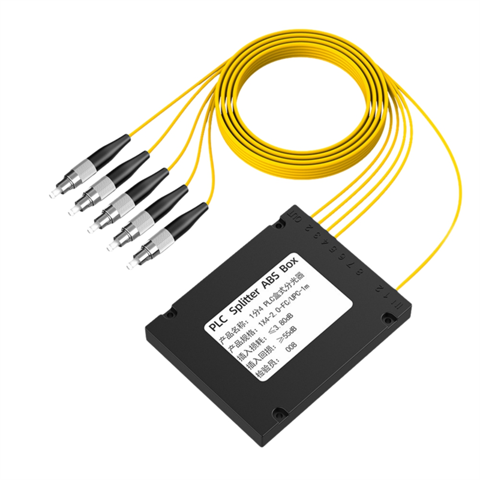
Network Access Point cluster: agrupación de puntos donde se conectan varios drops de clientes en una misma área. Es el nivel más local de distribución antes de llegar a la casa.
Estructura vertical de soporte para cables aéreos. Puede ser de madera (más común en EUA), concreto o acero. Los cables de fibra, eléctricos y telefónicos comparten el poste en franjas o zonas asignadas por tipo de servicio, con separaciones de seguridad reglamentarias.
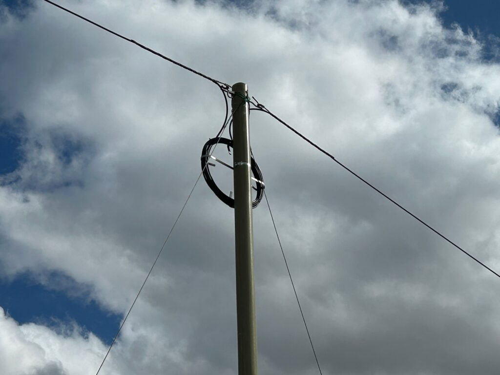
El punto físico donde el strand o cable queda anclado al poste mediante herrajes (ganchos, abrazaderas o soportes). Cada empresa tiene reglamentos sobre en qué franja vertical del poste puede instalar su equipo, para mantener separación segura respecto a cables eléctricos. También se refiere al derecho de instalar en ese poste (contrato de pole attachment).

Cable de acero galvanizado tensado entre postes. Su función es exclusivamente mecánica: soportar el peso del cable de fibra a lo largo del vano aéreo. No lleva ninguna señal. El calibre del strand se elige según la longitud del span y el peso del cable.

Distancia entre dos postes consecutivos, que es la longitud del cable que queda en el aire. A mayor span, mayor tensión en el strand y mayor "flecha" (curvatura del cable). El span máximo permitido depende del calibre del strand y el peso del cable.

El punto central entre dos postes, donde el cable tiene su mayor curvatura (máxima flecha). Es el lugar más vulnerable a contacto con otras líneas o vegetación. Se mide para verificar que se respete la altura mínima reglamentaria sobre la vía o vegetación.

Lash es el proceso de sujetar el cable de fibra al strand. El lashing wire es el alambre en espiral (acero galvanizado o aluminio) que se enrolla alrededor del strand y el cable simultáneamente, uniéndolos a lo largo de todo el vano. Se aplica con una máquina lasheadora que avanza por el strand enrollando el alambre.
Técnica de instalar un nuevo cable de fibra sobre un strand que ya tiene un cable lasheado. En lugar de instalar un strand nuevo, el nuevo cable se lashea encima del existente. Es más económico pero requiere verificar que la capacidad del strand soporte el peso adicional.
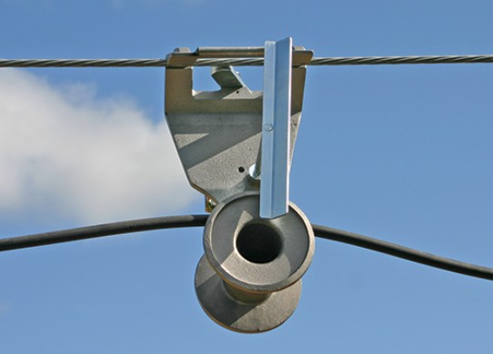
Distancia mínima reglamentaria que debe existir entre el cable de fibra (o strand) y otros cables o líneas en el mismo poste. La más crítica es la separación entre la primera fila de telecom y los cables eléctricos o de alumbrado. Los valores exactos los define la autoridad local o el propietario del poste.

Punto donde el cable aéreo cruza sobre otra línea, calle, vía, río u obstáculo. Los crossovers requieren atención especial al clearance y en muchos casos permisos específicos. El diseño debe garantizar la altura mínima sobre el cruce.
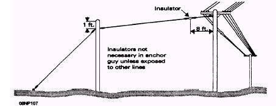
Punto donde dos tramos de cable de fibra se unen (empalman) en la red aérea. El splice generalmente se aloja en un splice case colgado del strand o del poste, protegido de la intemperie.
Poste donde el cable transita de subterráneo a aéreo (o viceversa). El cable lleva un tubo de acero o conduit protector llamado riser que lo cubre desde el nivel del suelo hasta el punto de fijación en el poste, para protegerlo de daños físicos.

El último poste de la red aérea antes de llegar al domicilio del cliente. Desde aquí sale el cable drop hacia la fachada de la casa. No es necesariamente el poste más cercano a la casa: es el poste designado como punto de salida del drop.
Poste que cumple dos funciones simultáneamente: es riser (transición de underground a aerial) y también drop pole (punto de salida del cable al cliente). Común cuando el cable llega al vecindario enterrado y el primer punto de distribución es también el punto de drop.
Sistema de cables diagonales de acero (guys) que anclan el poste al suelo para resistir la tensión lateral del strand o cargas de viento. Obligatorio en esquinas, puntos de fin de línea o postes con fuerzas laterales importantes.

Guy (retenida) que pasa sobre una vía, calle u obstáculo para anclar el poste en el lado opuesto. Requiere que el cable de la retenida cumpla la altura mínima sobre la vía. El diseño varía por empresa y normativa local.
Reserva de cable extra enrollada en un punto del trayecto, para usar en reparaciones futuras sin tener que jalar cable desde otro punto. Hay dos variantes:
Lazo guardado dentro de un handhole o manhole, enrollado en figura 8 u oval dentro de la caja.

Lazo guardado en el poste, sujeto con soporte tipo "figura 8" o gancho metálico. Queda enrollado en la parte superior del poste.

Longitud extra de cable que se deja en empalmes o transiciones para asegurar margen de trabajo. Evita que el cable quede a ras y sin posibilidad de maniobra en futuras intervenciones o reparaciones.
Cable que atraviesa un poste o bóveda sin terminar, empalmar ni conectar nada en ese punto. Solo pasa de camino a otro destino más adelante. Se amarra para mantenerlo ordenado pero no se interviene.
Trabajo de reparación para regresar el servicio a condición operativa después de un corte, daño accidental o intervención de terceros. Incluye empalmes de emergencia, sustitución de tramos, pruebas OTDR, restauración de la superficie y documentación del incidente.
Área cercada donde se emplaza la base de la torre más los equipos (shelters, generadores, baterías). Para monopolo, el estándar es de 50' × 50'. La cerca delimita el área arrendada y de acceso controlado.
Cercado de malla de alambre galvanizado, típicamente de 6 u 8 pies de altura. Delimita el perímetro del compound. Puede incluir Privacy Slats (láminas de privacidad) para ocultar el interior.
Láminas plásticas o metálicas insertadas en la malla de la cerca chain link para proporcionar privacidad visual al interior del compound y reducir el impacto estético en el entorno.
Estructura metálica en forma de 'H' utilizada para montar equipos eléctricos y de fibra dentro del compound. UO establece un estándar de 7' de ancho, con banco de medidores y gabinete NEMA 48×48 para telco.
Base de concreto enterrada que soporta y estabiliza los postes de la cerca o del H-Frame. Transfiere las cargas de la estructura al suelo.
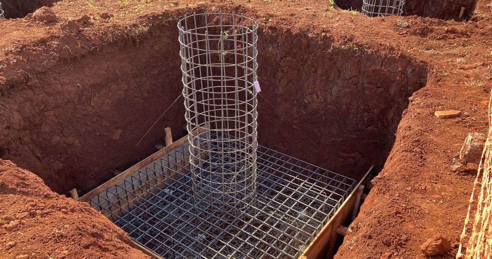
Porción del predio formalmente arrendada por el operador de la torre, que puede coincidir o ser más amplia que el compound. Se delimita en los documentos de contrato y en los planos del sitio.
Gabinete o caseta prefabricada instalada dentro del compound para alojar los equipos activos del carrier (radios, baterías, aires acondicionados). Puede ser metálico o de fibra de vidrio.
El suelo natural preparado y compactado que sirve como base para el pavimento, grava o cimentaciones del compound.
Tela sintética que se coloca bajo la grava para evitar el crecimiento de maleza y separar el suelo de la capa de acabado dentro del compound.
Capa de piedra triturada que cubre el suelo del compound. Facilita el drenaje de agua pluvial, evita el lodo y es de bajo mantenimiento en el área de acceso y trabajo.
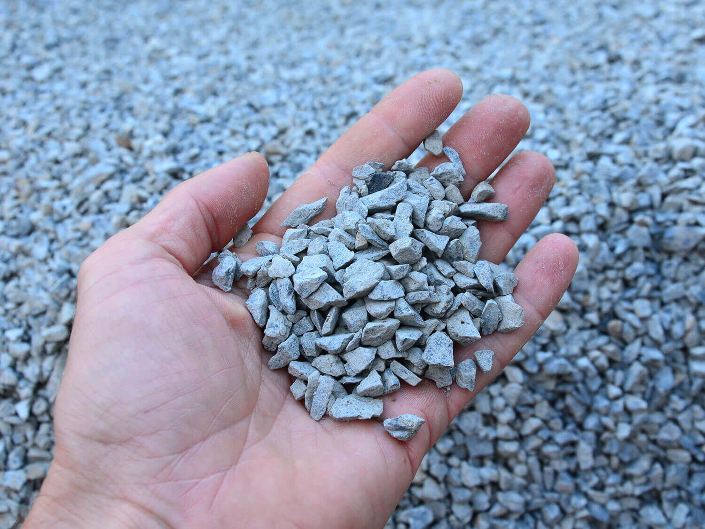
Interruptor que cambia automáticamente la fuente de energía de la red principal a un generador en caso de falla eléctrica. Garantiza la continuidad del servicio en sistemas críticos.
Sistema de medición que utiliza Transformadores de Corriente (CT) para medir altas corrientes de energía. Permite al proveedor eléctrico facturar el consumo del compound.
Dispositivo de seguridad que permite cortar el flujo eléctrico hacia el equipo para realizar mantenimiento de forma segura sin necesidad de des-energizar el sistema completo.
Unidad de medida para el grosor de cables eléctricos de gran capacidad. Por ejemplo, se especifican cables de 500 KCMIL para los alimentadores principales del compound.
Clasificación de protección para gabinetes eléctricos diseñados para uso exterior, resistentes a la lluvia y el hielo. Estándar aplicado a los gabinetes del H-Frame.
Sistema de enfriamiento de transformadores mediante la circulación natural de aceite y aire. Método pasivo sin necesidad de bombas o ventiladores forzados.
Configuración de transformador en estrella con neutro sólidamente conectado a tierra. Es el sistema de distribución eléctrica más común en instalaciones de telecomunicaciones en EUA.
Equipo de respaldo de energía eléctrica instalado dentro del compound. Se activa automáticamente (mediante el ATS) cuando hay un corte en la red eléctrica principal, garantizando la operación continua.
Banco de baterías o sistema de almacenamiento de energía instalado en el compound como respaldo de corta duración antes de que el generador entre en operación. Provee energía instantánea ante micro-cortes.
Varilla conductora que sobresale en la parte superior de la torre para disipar las descargas atmosféricas hacia tierra, protegiendo equipos y estructura. UO exige una altura estándar de 10' sobre el top RAD.
Anillo de conductor de cobre enterrado alrededor del perímetro del compound que forma el sistema de puesta a tierra. Todos los equipos metálicos del sitio se conectan a este anillo para protección eléctrica.
Varilla de acero recubierta de cobre, enterrada verticalmente en el suelo, que actúa como electrodo de tierra para el sistema de puesta a tierra del compound.
Método estándar para medir la resistencia de un sistema de puesta a tierra (ground). Consiste en clavar cuatro electrodos en el suelo e inyectar corriente entre los exteriores mientras se mide la caída de voltaje en los interiores.
Marca pintada en el suelo que indica hacia dónde debe apuntar el frente de la antena. Facilita la instalación precisa y verificable de la orientación de cada equipo.
Marca en forma de '+' que indica el centro exacto donde debe posicionarse cada una de las antenas. Guía al instalador para el posicionamiento preciso.
Cuadrado de 8.5 × 8.5 pies, pintado con spray, que delimita el área de trabajo para cada posición de antena dentro del compound.
Designación que indica el espesor de pared de tuberías según norma ASME. No representa directamente un espesor fijo, sino una clasificación estandarizada usada comúnmente en conduits de PVC.
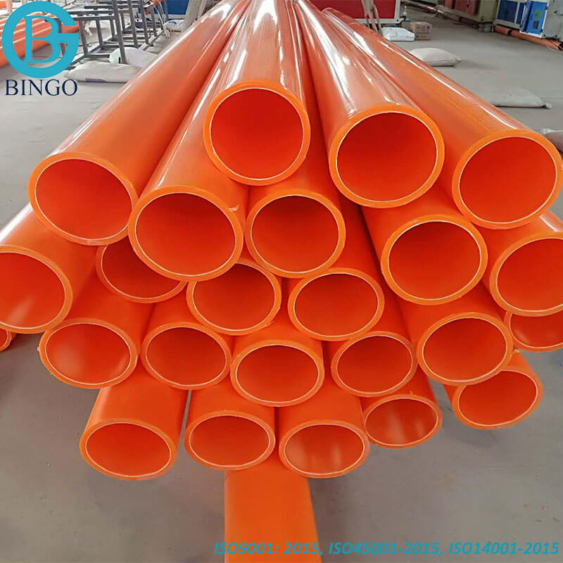
Compuesto rico en zinc que se aplica con brocha o aerosol para reparar superficies galvanizadas que fueron cortadas o soldadas en campo, restaurando la protección contra la corrosión.
Material plástico común usado para los conductos (tuberías) de cables eléctricos y fibra dentro y alrededor del compound. Disponible en Schedule 40 y Schedule 80.
Tubería flexible diseñada para proteger los cables de la humedad y vibraciones. Se utiliza para conectar el Rack V3.0 al H-Frame y en transiciones entre equipos dentro del compound.
Abertura pequeña en la base de un gabinete o estructura para permitir la entrada y salida de cables sin exponer el interior a la intemperie o a daños mecánicos.
Estándar de fibra óptica diseñada para largas distancias. Los planos del compound especifican el uso de 8 o 12 pares de fibra OS2 para las conexiones hacia la torre y equipos externos.
Cordón de nylon o polipropileno (PP) dejado dentro de los conductos vacíos para facilitar la futura instalación de cables. Se instala durante la obra civil para no tener que re-excavar.
American Society for Testing and Materials. Organización que define los estándares técnicos para los materiales. Ejemplo: ASTM A615 para varillas de refuerzo usadas en footings.
Código que regula las instalaciones eléctricas en EUA (NFPA 70). Define los estándares de seguridad para el cableado y equipos eléctricos del compound.
Occupational Safety and Health Administration. Normas de seguridad y salud en el trabajo que el contratista debe seguir estrictamente durante la construcción e instalación.
Unidades de medida en planos: LF (Lineal feet / Pies lineales), EA (Each / Cada uno), CU FT (Cubic feet / Pie cúbico). Utilizadas para cuantificar materiales en el BOM.
Indica que el dibujo es esquemático y no debe medirse directamente con un escalímetro sobre el papel. Se usa para detalles constructivos que son representativos, no proporcionales.
Torre de telecomunicaciones tubular de fuste único (un solo mástil), sin cables de retenida. Es la estructura más común en entornos urbanos y suburbanos por su menor huella. En UO aplica para alturas de 0–155 ft.
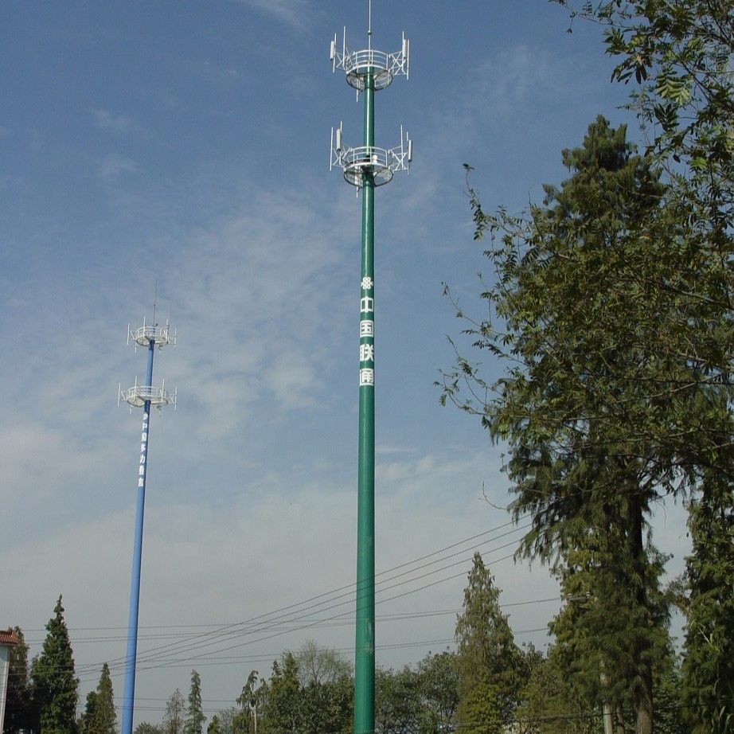
Torre que se sostiene por su propia estructura rígida, típicamente de celosía con 3 o 4 patas, sin cables de retenida. Tiene mayor huella que el monopolo pero soporta cargas más altas y múltiples carriers. En UO aplica para alturas de 160–350 ft.
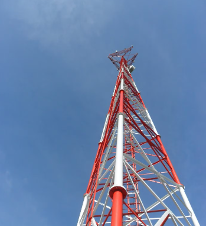
Torre de gran altura estabilizada con cables tensados (guy wires) conectados a anclas en el suelo. En UO aplica típicamente para torres de +355 ft. Requiere áreas adicionales para los anclajes.


Radio Antenna Deployment. Punto o altura de referencia en la torre donde se ubica o se reserva un conjunto de antenas de un carrier. UO pide considerar mínimo 3 RADs separados 10' entre sí, etiquetados como FUTURE en los planos.
Operador de telecomunicaciones inalámbricas (AT&T, Verizon, T-Mobile, etc.) que instala antenas y equipos en la torre. UO exige diseñar pensando en un mínimo de 3 future carriers para maximizar la rentabilidad del sitio.
Dato extraído de las fichas técnicas de antenas que representa la superficie real que "siente" el viento. Es el parámetro más crítico que se introduce en software como tnxTower para calcular la carga sobre la estructura.
Técnica de diseño que consiste en colocar las líneas de alimentación (feed lines) dentro del fuste del monopolo o detrás de los miembros estructurales, de modo que el viento no las impacte directamente.
Método de unión entre dos secciones de poste o tubo mediante un anillo circular plano con agujeros (brida), apretado con pernos cara a cara. Es la conexión más común en los postes redondos escalonados (tapered round poles).
Volumen elipsoidal de espacio libre entre dos antenas de un enlace de microondas. Para una transmisión exitosa, al menos el 60% de la primera zona de Fresnel debe estar despejada de obstáculos.
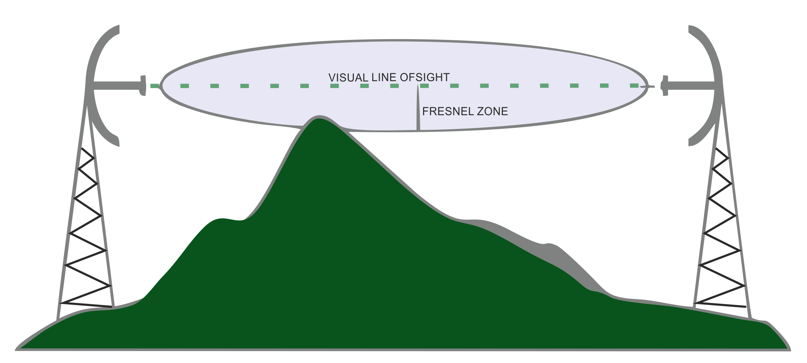
Equipos de alta frecuencia (antenas parabólicas circulares) usados para transmisión de datos punto a punto. Ofrecen alta ganancia y directividad. Se usan en SPLAT! para simular propagación y definir la altura de torre.
Distancia entre dos crestas consecutivas de una señal electromagnética. Determina el tamaño físico de la antena: a mayor frecuencia, menor longitud de onda y antenas más compactas.
Levantamiento topográfico-legal bajo el estándar ALTA/NSPS (American Land Title Association). Documenta los límites legales del predio, servidumbres, mejoras, accesos e infraestructura existente.
Datum de referencia vertical para expresar elevaciones absolutas. UO lo requiere en la Carta 1A, certificada por el surveyor con lat/long y tolerancias precisas, para garantizar la correcta planificación de la altura de la torre.
Carta oficial certificada por un surveyor licenciado que confirma la latitud, longitud y elevación AMSL del sitio. Requerida para la notificación de estructuras que pueden afectar el espacio aéreo.
NAD83 (North American Datum 1983): sistema de referencia horizontal estándar para coordenadas geográficas en Norteamérica. NAVD88 (North American Vertical Datum 1988): datum vertical estándar para elevaciones. Ambos son requeridos en los planos de torre.
NEC (National Electrical Code): código eléctrico de referencia en EUA. TIA (Telecommunications Industry Association): organismo que publica estándares para torres y estructuras (ej. TIA-222). UO exige certificar el cumplimiento de ambos.
SPT (Standard Penetration Test): prueba estándar de penetración para caracterizar la resistencia del suelo. Shelby Tube: tubo de pared delgada para extraer muestras inalteradas. RQD (Rock Quality Designation): índice de calidad de roca para cimentaciones.
Centro operativo eléctrico que actúa como punto de origen para líneas de transmisión y donde se ubican los dispositivos FDP. Es el nodo de partida de los segmentos de fibra en proyectos de red eléctrica.
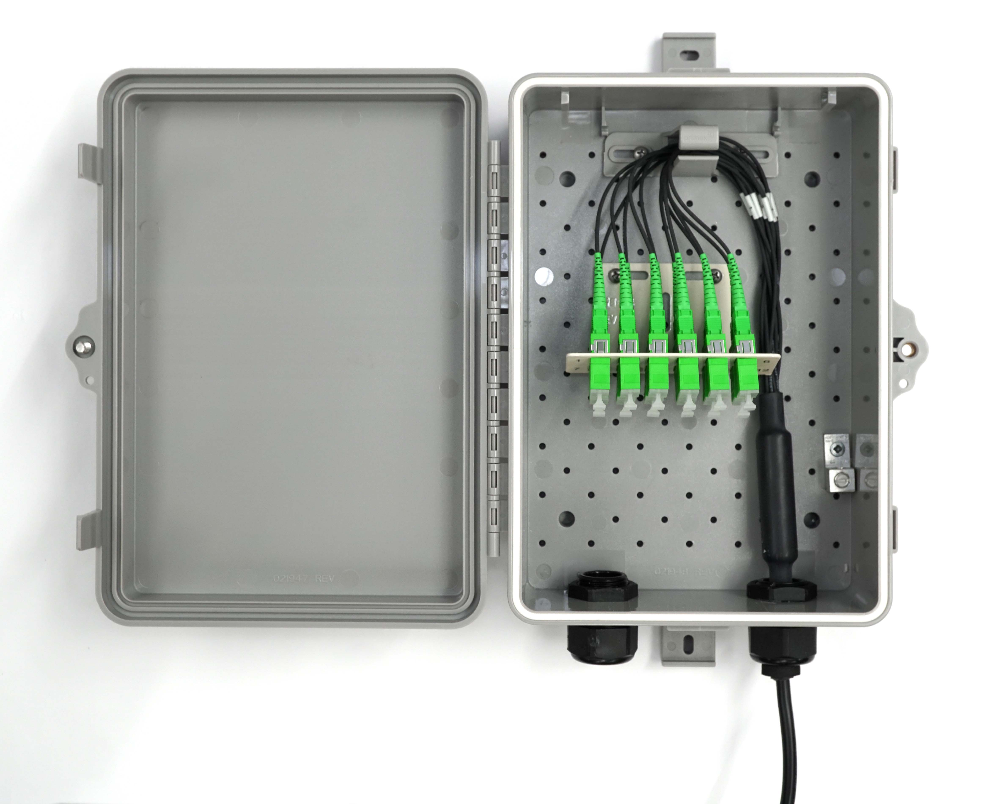
Punto crítico de la red donde convergen o nacen los segmentos de fibra óptica. Puede estar en subestaciones, cámaras o equipos de maniobra. En proyectos Grid, los FDP se ubican en subestaciones.
Extensión de fibra de un punto a otro que conecta subestaciones, T-splices o nodos estratégicos de la red eléctrica. Cada segmento tiene su propio diseño, bill of materials y documentación.
División técnica de un segmento principal, definida en el coversheet del proyecto. Permite subdividir tramos largos en unidades manejables para diseño, construcción y documentación.
Nodo de ramificación de fibra que permite derivar la señal hacia una nueva trayectoria sin interrumpir el cable troncal. Divide el hilo en dos o más rutas, actuando como punto de distribución en la red.
Excavación puntual de diámetro reducido realizada para localizar y verificar visualmente la posición exacta de servicios subterráneos existentes antes de iniciar trabajos de mayor envergadura con maquinaria pesada.
Técnica de excavación segura mediante métodos neumáticos (aire) o hidráulicos (agua) combinados con aspiración (vacío) para exponer infraestructura sin posibilidad de dañarla. Se exige cuando hay cables de alta tensión, fibra crítica o tuberías de gas donde un golpe sería catastrófico.

Señalizador vertical instalado en campo para indicar la ubicación exacta de infraestructuras enterradas (cables, conduits). Facilita las tareas de mantenimiento y previene daños en excavaciones futuras.
Marcador vertical instalado en campo para indicar la ubicación exacta y servir como elemento de advertencia en superficie que identifica la trayectoria de instalaciones críticas enterradas o aéreas. Usualmente se usan para marcar rutas de fibra óptica en zonas rurales o agrícolas.

Documentación gráfica sobre copias de los planos de construcción que registra las modificaciones realizadas durante la fase de construcción. Son la base para elaborar los planos As-Built al cierre del proyecto.
Referencia gráfica en planos de ingeniería que indica dónde un diseño continúa en otra lámina o sección. Permite dividir proyectos de gran extensión en múltiples hojas manteniendo la trazabilidad.
Registro organizado de todos los planos, documentos y especificaciones que componen el paquete de ingeniería de un proyecto. Incluye número de lámina, título, revisión y fecha de cada documento.
Obligación contractual de retirar material, infraestructura o superficie existente afectada por los trabajos, y restaurarla a su condición original una vez concluidos. Condición frecuente en permisos de ROW.
Proceso sistemático de medición y toma de datos en terreno (topografía, ubicación de servicios, condiciones del suelo) que sirve como base para el diseño. En proyectos Grid incluye la localización de postes y derechos de vía.
Registro en el sistema SSUP que representa un cable, línea o servicio que cruza por el aire sobre un área de trabajo. Se documenta para evaluar interferencias y coordinar despejes antes del inicio de cualquier trabajo en campo.
Punto donde la infraestructura de telecom (cables aéreos o conduits subterráneos) cruza un canal de agua. Requiere análisis especial de clearance, coordinación con la autoridad del canal y permisos específicos.
Cruce de infraestructura de telecom sobre o bajo una carretera federal, estatal o primaria. Requiere permisos especiales de la agencia de transporte (DOT), MOT detallado y en muchos casos el uso de HDD.
Punto donde la infraestructura de telecom cruza una vía de ferrocarril activa o en desuso. Requiere permisos específicos de la empresa ferroviaria, diseño de protección especial del cable y en muchos casos el uso de HDD.
Infraestructura subterránea de distribución de gas natural o LP identificada en el programa SSUP. Su presencia requiere localización obligatoria (811 / Miss Dig) antes de cualquier excavación, por el alto riesgo de explosión.
Infraestructura de distribución o transmisión eléctrica (aérea o subterránea) presente en el área de trabajo. Su identificación y localización exacta es crítica para la seguridad del personal y la planificación de clearances.
Tuberías de agua tratada (no potable) usada para riego o usos industriales. Se identifican con marcas específicas (típicamente púrpura) en campo. Su localización es necesaria para evitar interferencias con conduits de telecom.
Pozo instalado para monitorear la calidad o nivel del agua subterránea. Su presencia debe registrarse en el SSUP y considerarse en el diseño de rutas para evitar afectarlo durante la construcción.
Red subterránea para el transporte de aguas residuales domésticas o industriales hacia plantas de tratamiento. Su identificación y localización exacta es obligatoria antes de cualquier excavación.
Sistema de tuberías y canales diseñado para capturar y transportar el agua de lluvia y escorrentía superficial. A diferencia del alcantarillado sanitario, descarga directamente en cuerpos de agua sin tratamiento previo.
Infraestructura de iluminación pública vial, que incluye postes, luminarias y el cable subterráneo de alimentación. Los cables de alumbrado deben localizarse antes de excavaciones, ya que suelen estar a menor profundidad.
Infraestructura de control de tráfico vehicular que incluye el dispositivo visible y el cableado subterráneo de alimentación y control. Su daño durante la construcción puede causar situaciones de peligro vial.
Redes de distribución de agua potable a presión. Son uno de los servicios subterráneos más comunes y críticos. Su localización precisa es obligatoria antes de cualquier excavación.